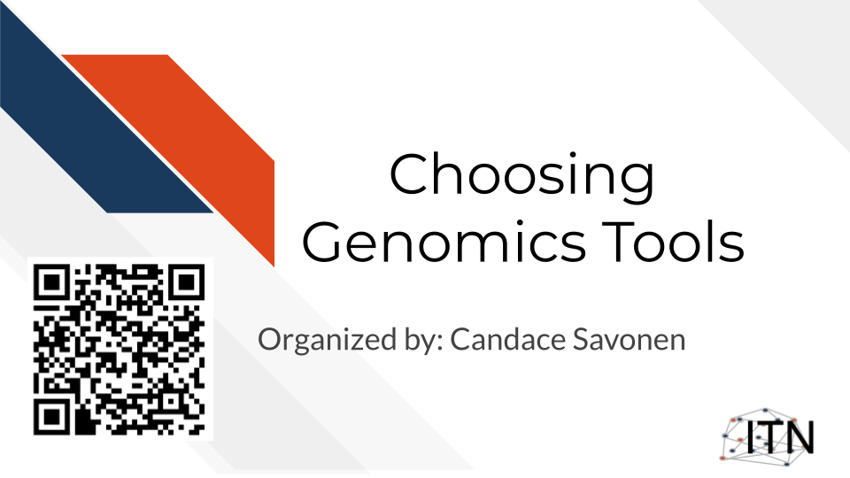
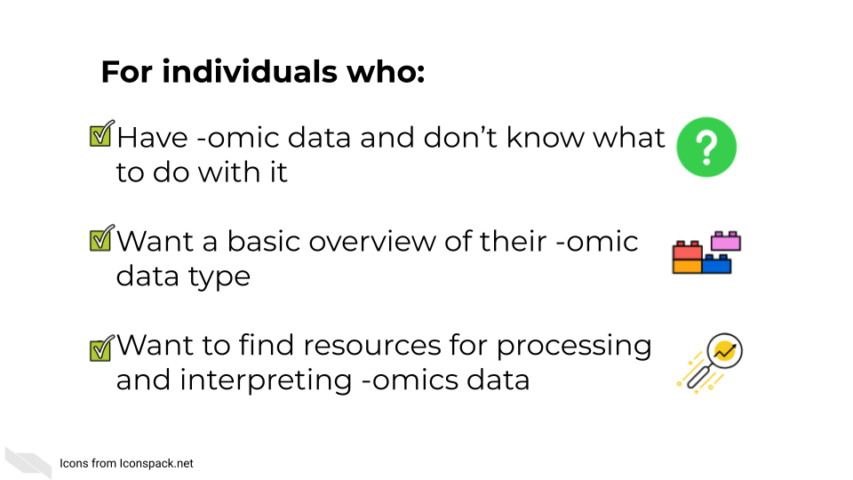

Chapter 1 Introduction

1.1 Target Audience
The course is intended for students in the biomedical sciences and researchers who have been given data and don’t know what to do with it or would like an overview of the different genomic data types that are out there.
This course is written for individuals who:
- Have genomic data and don’t know what to do with it.
- Want a basic overview of genomic data types.
- Want to find resources for processing and interpreting genomics data.

1.2 Topics covered:

1.3 Motivation
Cancer datasets are plentiful, complicated, and hold untold amounts of information regarding cancer biology. Cancer researchers are working to apply their expertise to the analysis of these vast amounts of data but training opportunities to properly equip them in these efforts can be sparse. This includes training in reproducible data analysis methods.
Often students and researchers need to utilize genomic data to reach the next steps of their research but may not have formal training in computational methods or the basics of the genomic data they are attempting to utilize.
Often researchers receive their genomic data processed from another lab or institution, and although they are excited to gain insights from it to inform the next steps of their research, they may not have a practical understanding of how the data they have received came to be or what needs to be done with it.

As an example, data file formats may not have been covered in their training, and the data they received seems unintelligible and not as straightforward as they hoped.

This course attempts to give this researcher the basic bearings and resources regarding their data, in hopes that they will be equipped and informed about how to obtain the insights for their researcher they originally aimed to find.
1.4 Curriculum

Goal of this course:
Equip learners with tutorials and resources so they can understand and interpret their genomic data in a way that helps them meet their goals and handle the data properly.
This includes helping learners formulate questions they will need to ask others about their data
What is not the goal
Teach learners about choosing parameters or about the ins and outs of every genomic tool they might be interested in. This course is meant to connect people to other resources that will help them with the specifics of their genomic data and help learners have more efficient and fruitful discussions about their data with bioinformatic experts.
1.5 How to use the course
This course is designed to be a jumping off point to more specific resources based on a genomic data type the learner has in mind (or currently on their computer). We encourage learners to follow links to resources we provide and feel free to jump around to chapters that are most useful for them.